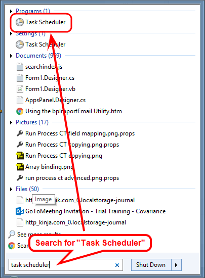
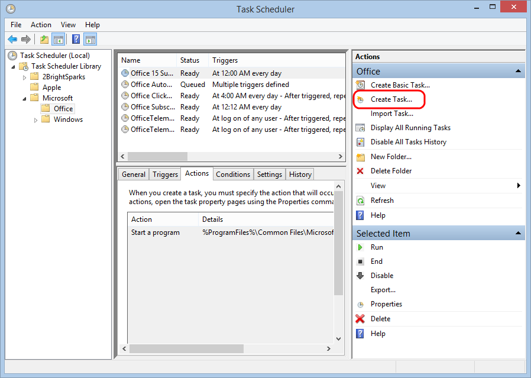
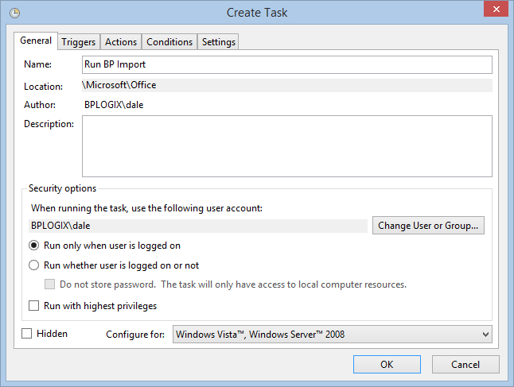
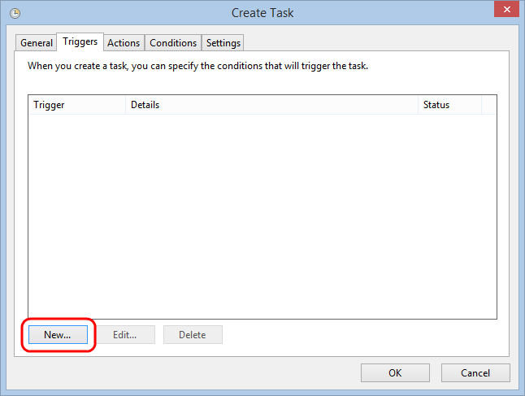
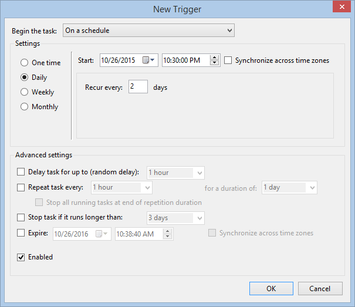
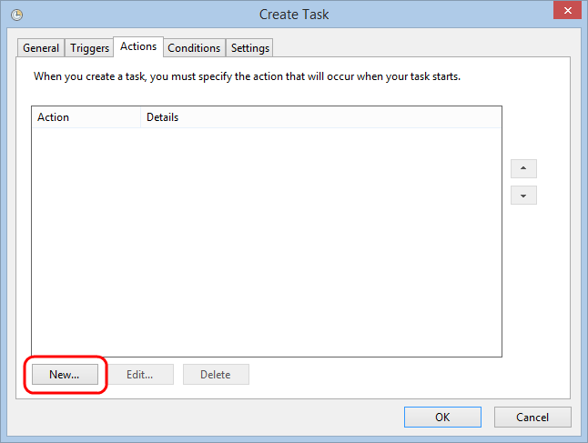
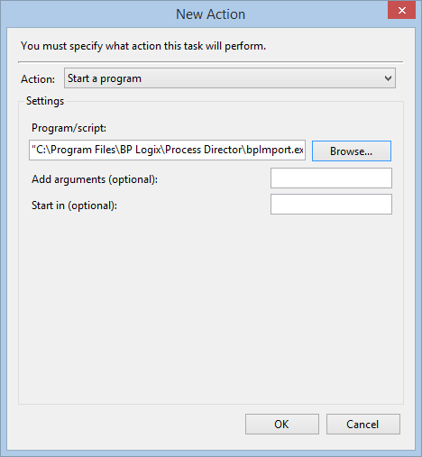

For most use cases that involve activities such as starting processes, or other internal Process Director actions, scheduled activities should be implemented through the use of the Goal object, rather than the Windows Scheduler.
For most use cases that involve activities such as starting processes, or other internal Process Director actions, scheduled activities should be implemented through the use of the Goal object, rather than the Windows Scheduler.To schedule any Process Director task (e.g. an import task) using the Microsoft Windows Scheduled Tasks utility, follow one of the procedures below. One of the most common uses of the Windows Scheduler is running the activity check page periodically.
For most use cases that involve activities such as starting processes, or other internal Process Director actions, scheduled activities should be implemented through the use of the Goal object, rather than the Windows Scheduler.
Open the Windows Start > All Programs > Accessories > System Tools > Scheduled Tasks menu item. This will display the Windows Scheduler. Click on the “Add a Scheduled Task” item and browse for the application to run. Go to the Process Director install directory and choose the program (e.g. bpImport.exe). Then continue with the scheduler indicating that it should run every day. When prompted for user credentials, ensure you enter a user that will not have the password change occur too often, because any change to this password will prevent the scheduled task from running. You can optionally create a new user account to run this task under (ensure the account you choose has the appropriate permissions by logging in as that user and running the bpImport.exe).
Once the task has been created, open the advanced properties of the item to configure the task. Change the Run input box to include the appropriate parameters to the command.
"c:\Program Files\BP Logix\Process Director\bpImport.exe" –w "http://localhost" –u "user1" –d "m:\My Docs" --delete
The following dialog is displayed when the properties of the task are viewed. This is also where the Windows user account that this task is run as can be changed.

The scheduling wizard only allows the task to be scheduled once a day. To run this import command more often, click on the Schedule tab and then click on the Advanced button to reconfigure the schedule. In the advanced settings, click on the Repeat task check box, this will repeat the task at the interval you define. For example to run this command every 5 minutes all day, set the repeat task interval to every 5 minutes and set it to run for a duration of 24 hours. Consult the Microsoft help for more information on this utility.

 When running the Process Director import utilities from the Windows scheduler, any errors will be written to a file named bpU.log in same the directory where the bpImport.exe exists.
When running the Process Director import utilities from the Windows scheduler, any errors will be written to a file named bpU.log in same the directory where the bpImport.exe exists.
To open the Task Scheduler, click the Start Button, then type "Task Scheduler" in the search box. The utility will appear in the Start menu results. Click on the Task Scheduler program item.

From the Actions pane on the right side of the Task Scheduler window, click the Create Task item to open the Create Task dialog box.

In the General tab of the Create Task dialog box, enter the Name of the task, e.g., "Run BP Import", then set the appropriate security options.

To create the schedule for the task, you will need to add a trigger, so select the Trigger tab, then click the New button.

Clicking the New button will open a New Trigger dialog box from which you can set the tasks schedule. In the example below, the trigger is set to run the task every 2 days at 10:30 PM.

Click the OK button to save and close your trigger configuration, then click the Actions tab to set the task action. In the Actions tab, click the New button to open the New Action dialog box, from which you can create the action for the task, i.e., to run the bpImport task.

In the New Action dialog box, select "Start a Program" from the Action dropdown, then browse to select the bpImport task.

You can add the additional arguments in the Add Arguments box, e.g., –w "https://localhost" –u "user1" –d "m:\My Docs" --delete, then click the OK button to save and close the action.
To finish creating the task, click the Create Task dialog box's OK button.
When running the Process Director import utilities from the Windows scheduler, any errors will be written to a file named bpU.log in same the directory where the bpImport.exe exists.